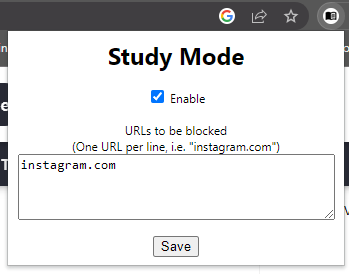
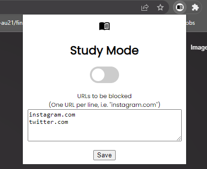
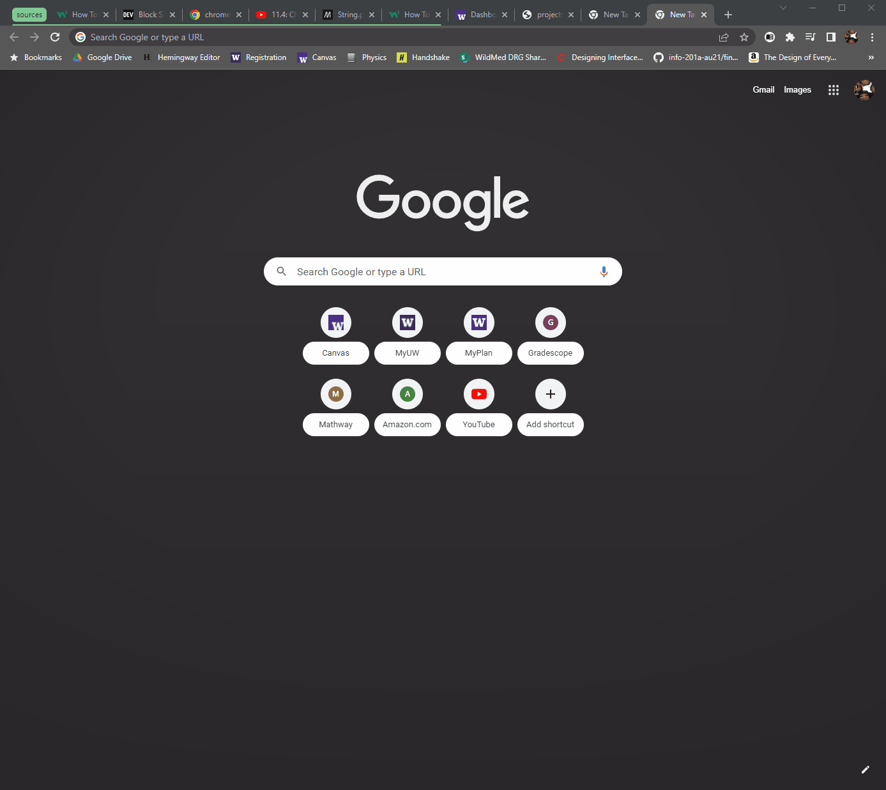

For the second mini-project of the course, we were tasked with creating a Chrome extension
using HTML, CSS, and Javascript. I decided to create an extension which blocks access to
websites from a list of urls that the user can control. The project is available in the
following GitHub Repository:
Study Mode: Website Blocker Chrome Extension
Step 1:
To begin my extension, I began by reading the Chrome Extension 101 page and creating
my manifest.json file. I created a title, description, and simple icon for the extension
and began to explore the creation of my extension's popup window through popup.html.
Step 2:
For the popup window, I wanted the title of the extension, an enable button, a textbox to
enter URLs to block, and a save button to save the updated list of URLs.
These elements were easy to create through some Googling of HTML documenation.
Now, it was time to get the extension to actually do something!
Step 3:
After this, I spent a significant amount of time organizing my site's various folders to
be formatted correctly. I had to resolve the issue of the navigation bar breaking when
being copied over to a new HTML page within my site due to directory issues. This
required the use of ".." multiple times to refer to different files and pages. Once I
squared this issue away, I began adding content to each of my pages, which was rather
straight forward with just some simple HTML.
Step 4:
Now, I began messing around in Javascript, specifically in the popup.js file. I learned
through the provided Javascript documentation and hours of Googling how to set up
listener events for when the popup was loaded, when the enable checkbox was clicked,
and when the save button was pressed. I now needed to find a way to save these as
variables so that the extension could save content when the popup is closed and opened
again. To accomplish this, I implemented the chrome.storage API, which was quite difficult
to figure out. Now, I could store the status of the enable button and the content of the URL
textbox and retrieve this status when the popup is opened again. This process took some
time, as the syntax for the storage API confused me quite a bit. Here is a progress photo
of what the extension looked like at this time.

Step 5:
At this point, I was pretty lost on how to block websites from this list of URLs. I searched
Google for quite some time and eventually found the chrome.tabs API, which seemed like it might
be what I was looking for. Implemented this API was a hassle, and I was quite confused by whether
I needed a content script or a background script running in order to implement it. This is when I
stumbled across a tutorial that showed the necessary background script to accomplish what I had
in mind. This tutorial led me back to the beginning, as it turned out I had set up a lot of my
manifest.json and popup files incorrectly to allow my intended behavior. I credit this tutorial
heavily, as my learning process relied on it for the rest of my project and my background.js file
is almost entirely the same as what is shown in the tutorial.
Website Blocker Tutorial
Even with this tutorial at my disposal, implementing and troubleshooting my code took hours and
was quite the headache. After hours of referencing the tutorial and other resources related to
Javascript and Chrome extensions, I was able to get the extension to block websites from the list!
I then found code for a fancier toggle in the form of a CSS toggle switch. I implemented this
onto my popup.html and popup.css and also changed the font to my current favorite, "Poppins" and
added the logo to the popup window.
My extension was now completed. Once again, I would like to give a huge shoutout to the tutorial
created by Pavel Bucka, as it helped me immensely and influenced a large portion of my extension's
code.


1. The first issue that I encountered was using the chrome.storage API. I could not
figure out how to get the values out of storage after setting them. I initially tried
using the window.storage option, but realized that my background script would not be
able to access these values, so I watched many YouTube videos and eventually figured
out how to retrieve the values through chrome.storage.local.get.
2. My second issue occured when creating my background script file. I originally
had a content script file and was confused on how to accomplish what I desired.
Once again, YouTube and the internet saved the day and explained the differing
functions of background and content scripts to me. Manifest version differences
also caused some confusing at this stage, as the manifest.json requires different
syntax for each version when adding a content or background script.
3. My third issue was related to the background script in general. I was quite lost
on how to use the chrome.tabs API and the different functions available. Documentation
on the API site was very limited and didn't explain much at a low-level. YouTube and the
previously credited tutorial helped a lot in this stage. My entire background.js file
is nearly the same as the one in the tutorial, as it worked flawlessly with what I had
already created in my popup files.
Website Blocker Tutorial
CSS Toggle Switch
Chrome Extension Documentation
MDN Javascript Documentation
These four sources were the most useful in the creation of my project, but there were
many more that I referenced briefly. This project taught me a ton about Javascript,
HTML, and CSS, and I am grateful to all of the online sources that clarified the various
details for me!